- Desconecte el cable de batería negativo. Consultar Desconexión y conexión del cable de batería negativo .
- Desmonte el capó. Consultar Sustitución del capó .
- Recubra el agente frigorífico. Consultar Recuperación y recarga del agente frigorífico .
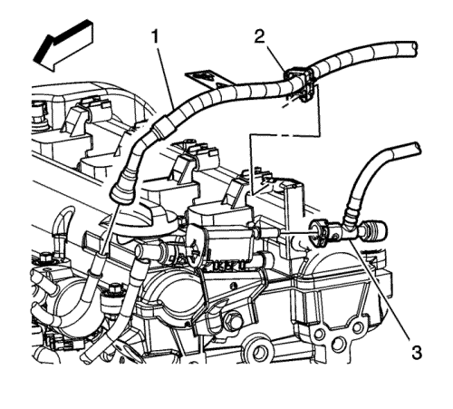
- Despresurice el sistema de combustible. Consultar Descarga de la presión del combustible : Sin CH 48027-100 → CH 48027-100 .
- Retire el conducto de salida del purificador de aire. Consultar Sustitución del conducto de salida del filtro de aire : LE5 o LE9 .
- Extraiga el conjunto del filtro de aire. Consultar Sustitución del conjunto del filtro de aire : LE5 o LE9 → LD9 .
- Desconecte el acoplamiento rápido (1) del tubo de distribución de combustible. Consultar Reparación del acoplamiento rápido con collar metálico .
- Desconecte el acoplamiento rápido de la tubería de emisiones de vapor (EVAP) (3) del solenoide de purga EVAP. Consultar Reparación del cierre rápido con collar de plástico .
- Extraiga el clip del tubo de alimentación de combustible (2) del soporte de la tubería de combustible.
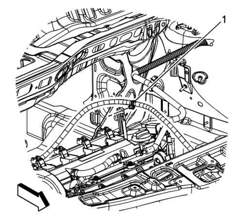
- Desmonte el clip del cable de cambio del transeje (1) del soporte de la tubería de combustible.
- Quite los pernos del módulo de control del motor y colóquelos aparte. Consultar Sustitución del módulo de control del motor : LE5 , LE9 o LAF → LD9 .
- Desmonte la batería Consultar Sustitución de la batería .
- Desmonte la pantalla térmica del colector de escape. Consultar Sustitución de la pantalla térmica del colector de escape : LE5 .
- Desmonte los sensores de oxígeno. Consultar Sustitución de la Sonda Lambda Calentada - Sensor 1 : LE5 , LE9 o LAF → LD9 y Sustitución de la Sonda Lambda Calentada - Sensor 2 : LE5 , LE9 o LAF → LD9 .
- Desmontar el cuerpo de mariposa. Consultar Sustitución del conjunto del cuerpo de la mariposa : LE5 o LE9 → LD9 .
- Extraiga el indicador de nivel de aceite del motor.
- Elevar el vehículo y soportarlo de manera segura. Consultar Elevación del vehículo con un gato .
- Quite las ruedas delanteras. Consultar Desmontaje y montaje de la rueda y el neumático .
- Vacíe el sistema de refrigeración. Consultar Drenaje y llenado del sistema de refrigeración .
- Vacíe el aceite de motor. Consultar Sustitución del aceite de motor y filtro de aceite. .
- Bajar el vehículo.
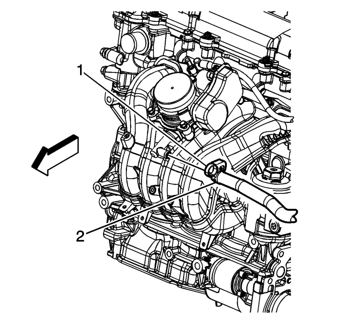
- Vuelva a colocar la abrazadera del tubo flexible de vacío del servofreno (1) en el colector de admisión.
- Desmonte la tubería flexible de vacío del servofreno (2) del colector de admisión. Retire el tubo flexible del servofreno.
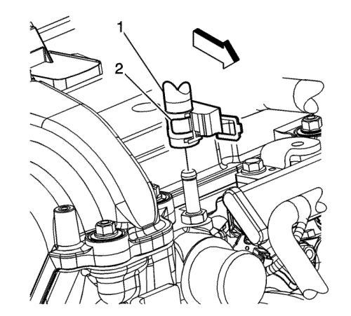
- Extraiga la abrazadera del tubo flexible de entrada de recuperación de refrigerante (2) de la culata.
- Retire el clip del tubo de entrada de recuperación de refrigerante del tubo de distribución de combustible.
- Extraiga el tubo flexible de entrada de recuperación de refrigerante (1) de la culata. Retire el tubo flexible/tubo.
- Extraiga el tubo flexible de entrada del radiador de la culata. Consultar Sustitución del tubo flexible de entrada del radiador : Diesel → V6 → LE5 .
- Desmonte el tubo flexible de salida del radiador. Consultar Sustitución del tubo flexible de salida del radiador : Diesel → V6 → LE5 .
- Extraiga el tubo flexible de entrada del calefactor (3) de la carcasa del termostato.
- Extraiga el tubo flexible de entrada del calefactor/depósito de recuperación de refrigerante (2) de la carcasa del termostato.
- Elevar el vehículo y soportarlo de manera segura. Consultar Elevación del vehículo con un gato .
- Desenchufe el conector eléctrico del mazo de cables del motor (2) del compresor del aire acondicionado (A/A).
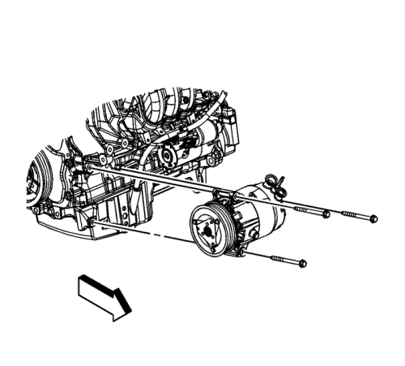
- Quite el perno del compresor de A/A y apártelo.
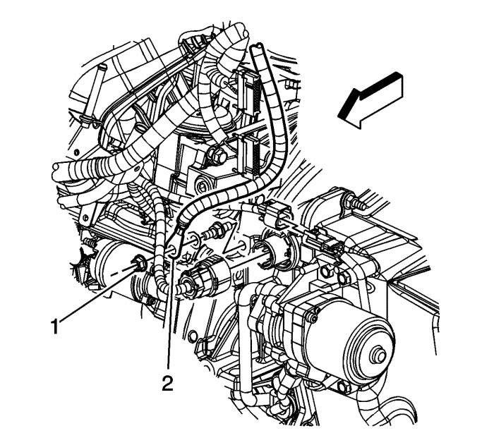
- Quite la tuerca del terminal de masa del mazo de cables del motor (1) del espárrago del transeje.
- Quite el terminal del cable negativo de la batería (2) del espárrago del transeje. Retire el cable negativo de la batería.
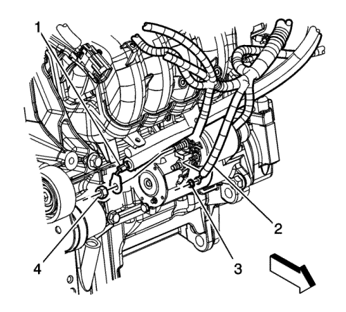
- Desmonte la tuerca del cable positivo de la batería que va al motor de arranque (4).
- Quite el terminal del cable positivo de la batería (1) del motor de arranque.
- Extraiga el cable positivo de la batería de su posición entre el motor de arranque y el motor. Retire el cable positivo de la batería.
- Bajar el vehículo.
- Desenchufe los conectores eléctricos del mazo de cables del motor que sea necesario.
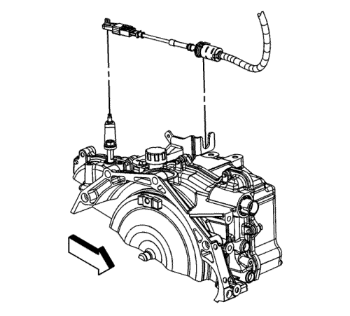
- Extraiga el cable de cambio del transeje de la palanca selectora del cambio.
- Suelte los lips de fijación del cable de mando del cambio y desmonte el cable del soporte del cable de mando del cambio.

Nota: El conjunto radiador/condensador/ventildador permanecerá en el vehículo durante el desmontaje del motor.
- Utiliando unas cintas de unión, fije el conjunto del radiador/condensador/ventilador al soporte del radiador.
- Elevar el vehículo
- Desmonte los revestimientos del paso de rueda delantero. Consultar Sustitución del revestimiento del panel del paso de rueda delantero .
Nota: Debería utilizar una pieza de madera entre el transeje y la base del motor. Este trozo de madera servirá de apoyo para el motor cuando se quiten los pernos de fijación del motor del lado izquierdo.
- Coloque una pieza de madera 1 x 2 x 4 entre el transeje y la base del motor.
Nota: Debería utilizar una pieza de madera entre el cárter de aceite y la base del motor. Este trozo de madera servirá de apoyo para el motor cuando se quiten los pernos de fijación del motor del lado derecho.
- Coloque una pieza de madera 1 x 2 x 4 entre el cárter de aceite y el bastidor del motor.
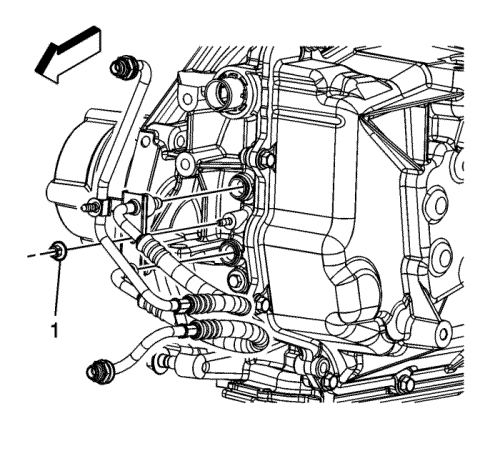
- Extraiga el líquido del transeje.
- Quite la tuerca que une la tubería del refrigerador de aceite del transeje al transeje (1).
- Desmonte las tuberías del refrigerador de aceite del transeje del transeje.
- Desmonte el catalizador. Consultar Sustitución del catalizador : LE5 .
- Extraiga el perno de espolón que une el eje intermedio al mecanismo de la dirección y desconecte el eje intermedio del mecanismo de la dirección. Deseche el perno de fijación. Consultar Sustitución del eje intermedio de la dirección .
- Separe de las manguetas las barras de acoplamiento exteriores. Consultar Sustitución la barra de acoplamiento exterior del varillaje de la dirección .
- Desenganche las varillas de la barra estabilizadora. Consultar Sustitución de la varilla de la barra estabilizadora .
- Separe las rótulas de las manguetas. Consultar Sustitución de la rótula del brazo de apoyo inferior .
- Desmonte los semiejes de las ruedas. Consultar Sustitución del semieje de la rueda delantera .
- Bajar el vehículo.
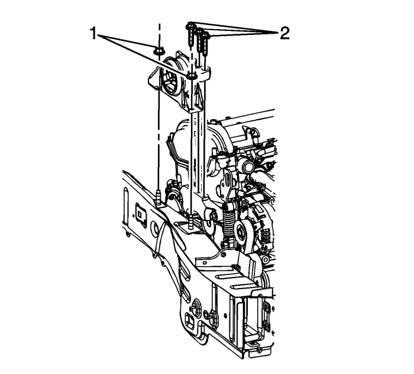
- Retire el alojamiento del motor en los tornillos del soporte del alojamiento del motor (2).
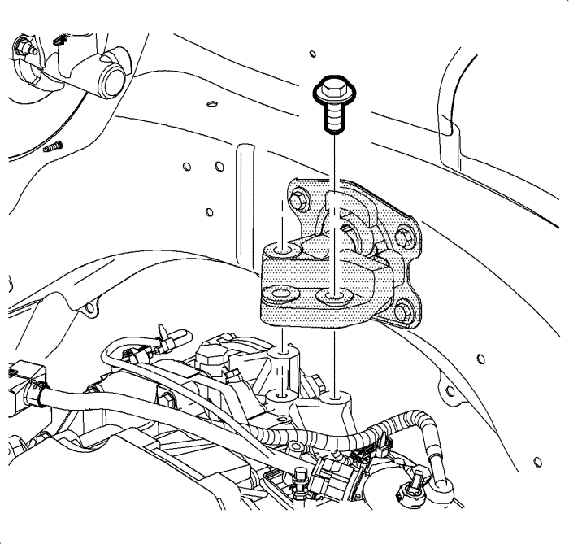
- Desmonte los pernos del soporte del transje al adaptador del transeje.
- Elevar el vehículo
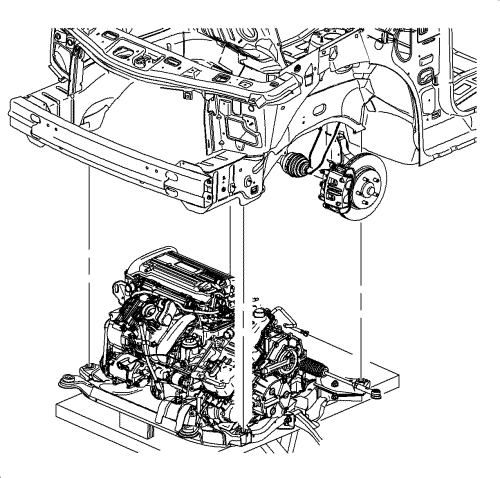
Nota: Durante el desmontaje del tren motriz, apoye la carrocería del vehículo sobre un gato en la parte trasera del vehículo.
- Coloque una mesa de soporte del motor debajo del conjunto del tren motriz.
Nota: Pueden utilizarse bloques de madera entre la parte delantera del bastidor y el cárter de aceite y la mesa para nivelar el tren motriz durante el desmontaje.
- Con la mesa colocada, elévela hasta que entre en contacto con el tren motriz.
- Extraiga los pernos del bastidor a la carrocería. Deseche los tornillos.
Nota: Al bajar el conjunto del motor/transeje, compruebe si todas las tuberías de frenos, cables de cambio y otros componentes están libres durante el desmontaje.
- Baje la mesa del motor y eleve la carrocería sobre el dispositivo de izado hasta que el motor/transeje y la base hayan salido del vehículo.
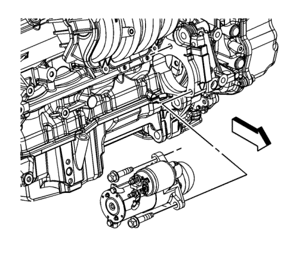
- Quite los pernos del motor de arranque y extráigalo.
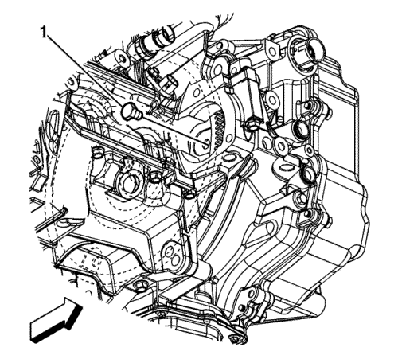
- Extraiga los tornillos del convertidor de par a la placa flexible (1).
- Monte un mecanismo de elevación adecuado para el motor.
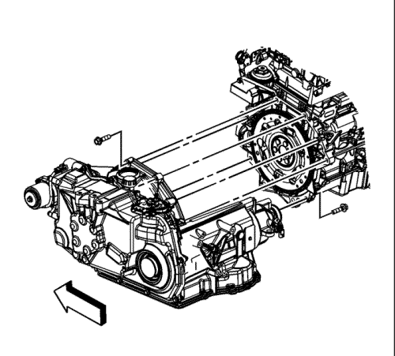
- Quite los pernos del transeje del motor.
- Separe el motor del transeje.
- Monte el motor en un soporte de motor adecuado.